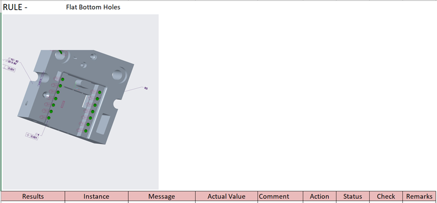
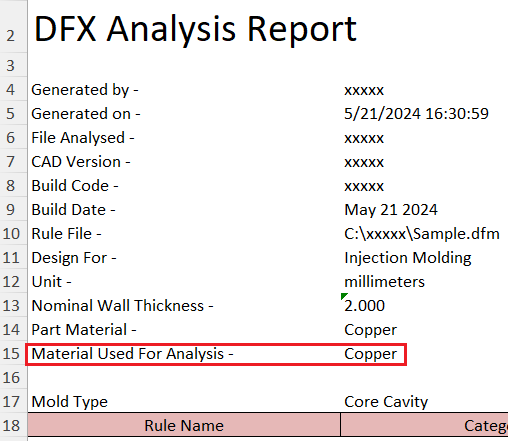
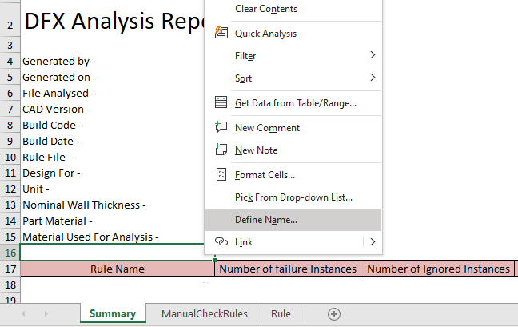
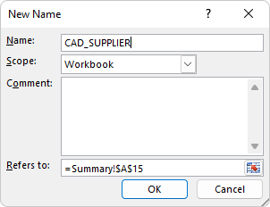
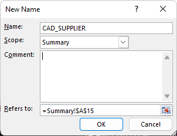
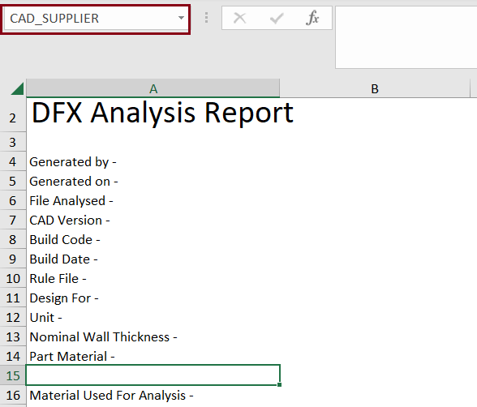
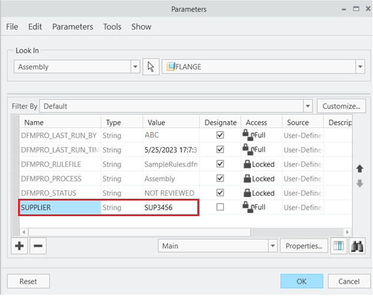
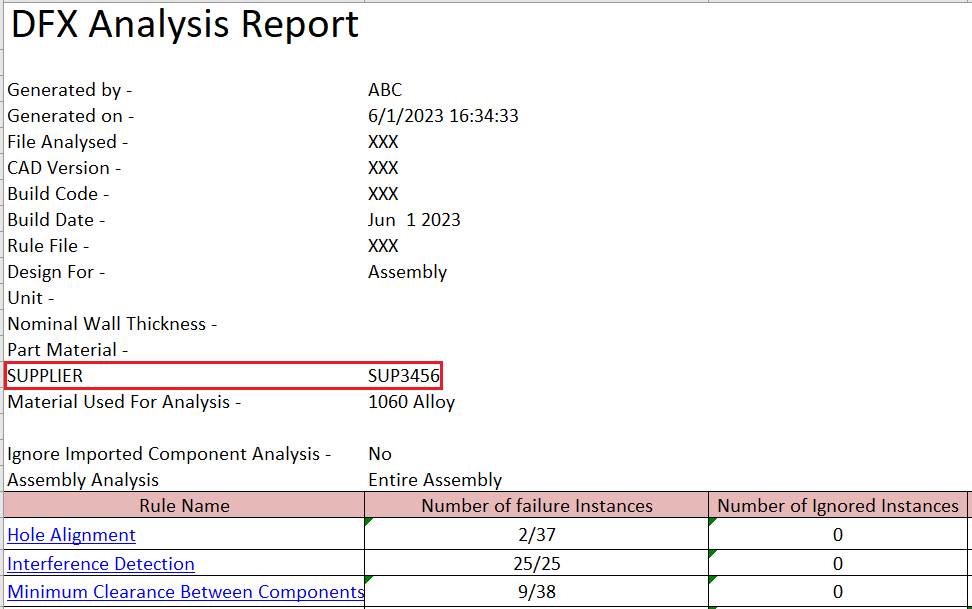
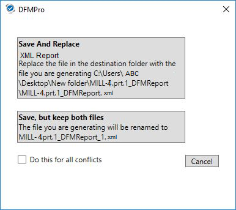
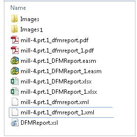

DFMPro ユーザーインターフェース上の Report オプションをクリックすると、現在の解析結果を表示できます。収集されたデータは選択したレポート形式に変換され、以下の情報が表示されます。
ルール名
違反インスタンス数
重要度
ルールの重要性
推奨事項
手動チェックルールの詳細
例:

Note:
Excel レポートでは、DFMPro は各違反ルールに対して、失敗したインスタンスのルートノード画像を表示します。
キャプチャされた画像の数が多い場合、レポート生成処理には時間がかかります。
XML レポート（Web ブラウザでの表示はサポートされていません。任意の XML ビューア、または XML レポートと同様の内容を持つ PDF レポートで確認してください。）
Microsoft Excel ベースのレポート（Microsoft Excel のインストールが必要）
PDF レポート（Adobe PDF Reader が必要）
高度な 3D レポート（eDrawings Viewer を使用して表示）
Note:
Microsoft Excel がインストールされていない場合でも、DFMPro の Excel ベースレポートは生成されます。
Microsoft Excel ベースのレポート（Microsoft Excel のインストールが必要）
Note:
コストレポートオプションは、コストライセンスが利用可能な場合のみ表示されます。
XML レポート: XML レポートの形式および表示内容は、以下のフォルダに保存されている XML スタイルシート（DFMReport.xsl）を編集することで変更できます。
<ProgramData>\GeometricLtd\DFMPro\wildfire\Settings\Lang\English\Template
Microsoft Excel レポート: レポートの形式および表示内容は、テンプレートを編集することで変更できます。PC にインストールされている Microsoft Excel のバージョン（2007 以降、Office 365）に応じて、指定された場所から適切なテンプレート（ExcelReport.xlt / ExcelReport.xltx）が参照されます。デフォルト形式では、レポートには違反ルール一覧を含むサマリーシートが含まれます。各ルールは、そのルールに対する失敗インスタンスの詳細を含むシートにリンクされています。
以下のデフォルトの場所にある Excel シートテンプレートを開きます。
Drive C:\ProgramData\GeometricLtd\DFMPro\wildfire\Settings\Lang\English\Template
Excel レポートテンプレートに Rule シートが含まれていることを確認します。
Rule シートでは、ルール名は DFMPRO_RULE_NAME セルの隣に記載されます。
失敗インスタンスの詳細を含むテーブルは、DFMPRO_INSTANCES という名前のセルに挿入されます。
generated by、generated on、file analysed に関するレポート情報は、それぞれ DFMPRO_GEN_BY、DFMPRO_GEN_ON、DFMPRO_ANALYSIS_FILE というセル名の隣に Summary シートへ書き込まれます。サマリーテーブルは DFMPRO_SUMMARY_TABLE というセルに挿入されます。
Note:
DFMPro ユーザー入力ダイアログボックスで指定した材料情報は、DFMPro Excel レポートのサマリーページに表示されます。

ExcelReport.xlt または ExcelReport.xltx を開きます。
Summary シートで、ルール名の上にあるセルを右クリックし、コンテキストメニューから Define Name オプションを選択します。

New Name ダイアログボックスで、CAD に続けてパラメータ名を追加します。（例: CAD_SUPPLIER）
Note:
セル ID およびモデルパラメータ名は、大文字・小文字を区別しません。
上記の例では、SUPPLIER が実際の CAD パラメータであり、「CAD_」はテンプレート内で指定されている接頭辞です。
ルールシートおよび手動チェック: ルールシートでは CAD パラメータ機能はサポートされていません。
Scope には、ドロップダウンリストから Workbook オプションを選択します。
Comment グループボックスに、必要なカスタムメッセージ／コメントを入力します。


Note:
同一セルに対して複数の名前／ID が定義されている場合、DFMPro は以下のルールに従って CAD パラメータを反映します。
CAD パラメータは、Workbook レベルまたは Worksheet レベルで定義されたセル ID に関係なく反映されます。
Workbook レベルのセル ID は、Worksheet レベルのセル ID よりも優先されます。
同一スコープで同一セルに複数のセル ID が定義されている場合、アルファベット順で最初のセル ID が使用されます。
OK ボタンをクリックして変更を保存します。
追加されたパラメータがセルに表示されます。

テンプレートファイルを同じ拡張子（ExcelReport.xlt または ExcelReport.xltx）で保存します。
CAD パラメータ情報が CAD ファイルから取得され、Excel レポートのサマリーページに反映されます。

CAD パラメータ情報が CAD ファイルから取得され、パラメータ名とその値として Excel レポートに反映されます。

Save and Replace オプションをクリックすることで、以前に生成したレポートを上書きできます。

Save, but keep both files オプションをクリックすると、複数のレポートバージョンを保持できます。これらのレポートは一意のバージョン ID によって識別されます。
例えば、ユーザーが Save, but keep both files オプションを選択した場合、（<partname>_DFMReport_1.XML、<partname>_DFMReport_2.XML）がレポートフォルダに保存されます。

Note:
モデルファイルまたはレポートパスに英数字以外の文字が含まれている場合、DFMPro の 2D PDF レポートはサポートされません。